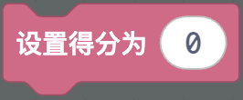
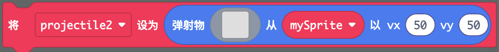
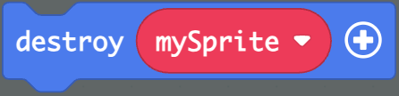
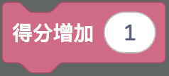
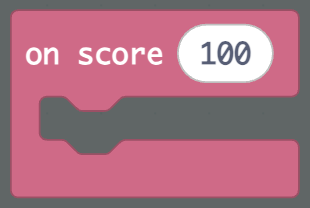
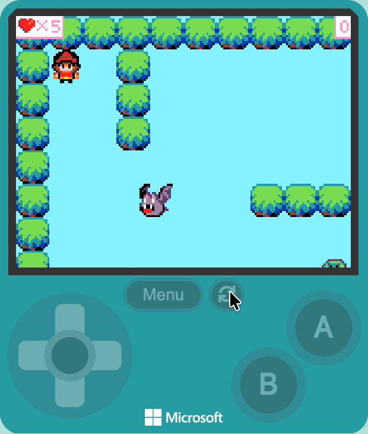

按 A 键发射子弹消灭敌人，得分到达目标就获胜
两种方式二选一：
功能04-受伤生命与游戏结束）在屏幕上方显示分数，从 0 开始。
游戏信息 → 得分 → 将得分设置为 [0] 到 当开机时
💡 分数和生命一样是游戏自带的，设置后会自动显示在屏幕上方，不用自己画。
按 A 键时，从玩家身上发射一颗子弹。
控制器 → 当按钮 A 按下时 到代码区精灵 → 弹射物 → 将 [projectile] 设为弹射物从 [mySprite] 以 vx [50] vy [50]
💡 Projectile 是英文，中文叫弹射物（也叫抛射物），就是子弹这种从精灵身上发射出去、会自动往前飞的东西。它本质上也是一个精灵，所以图像、重叠、销毁这些积木对它都适用。积木里的 vx、vy 决定子弹飞行的方向和快慢——正负号决定方向、数字大小决定速度，可以自己改数字试试。
子弹碰到敌人时，敌人消失，分数加 1。
精灵 → 当 [Projectile] 与 [Enemy] 重叠时 到代码区精灵 → 特效 → destroy（这个指令还是英文的，意思是"销毁"），再把事件自带的 otherSprite（局部变量，代表被碰到的那个精灵）拖到 destroy 里游戏信息 → 得分 → 改变得分 [1]

💡 要不要把子弹也一起销毁？由你自己决定——销毁子弹，一颗子弹只能打一个敌人；不销毁，子弹会继续飞，可能打中更多敌人。
分数达到目标时，显示胜利画面。
游戏信息 → 得分 → on score [N] 事件到代码区（这个指令还是英文的，意思是"当得分为"）游戏 → game over [胜利]（这个指令还是英文的，意思是"游戏结束"）N 填多少？地图上有几个敌人，消灭一个加 1 分，全部消灭就胜利，所以 N 填敌人的数量
💡 on score 会在分数达到指定数字时自动触发，和功能04 的 当生命值为 0 时 很像，不用自己写判断。
完整测试射击、得分和获胜系统。

| 参数 | 作用 | 建议 |
|---|---|---|
| 子弹速度 vx/vy | 子弹飞行的方向和快慢 | 自己试，50-200 比较合适 |
| 子弹图像大小 | 命中判定范围 | 8×8 或 16×16 |
| 胜利分数 | 分数达到多少就获胜 | 等于地图上敌人的数量 |
当按钮 A 按下时 事件vx、vyvx、vy 的正负号，往哪边飞取决于它们的值destroy改变得分 是否放在了重叠事件里on score 里的数字是否等于敌人数量game over 是否放进了这个事件里